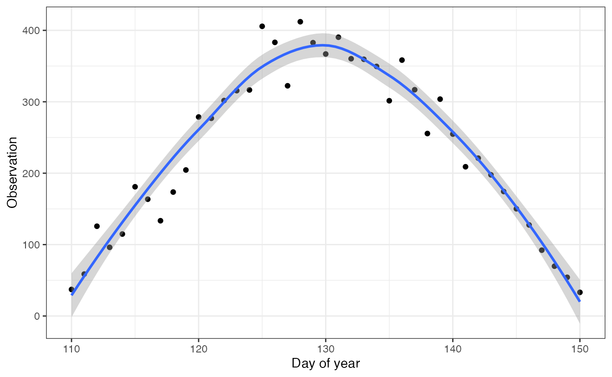

Fitting time varying phenology models with the phenomix package
2022-09-23
Source:vignettes/a1_examples.Rmd
a1_examples.Rmd
library(ggplot2)
library(phenomix)
library(dplyr)
library(TMB)
#> Warning: package 'TMB' was built under R version 4.1.2
#> Warning in checkMatrixPackageVersion(): Package version inconsistency detected.
#> TMB was built with Matrix version 1.4.1
#> Current Matrix version is 1.4.0
#> Please re-install 'TMB' from source using install.packages('TMB', type = 'source') or ask CRAN for a binary version of 'TMB' matching CRAN's 'Matrix' packageOverview
The phenomix R package is designed to be a robust and flexible tool for modeling phenological change. The name of the package is in reference to modeling run timing data for salmon, but more generally this framework can be applied to any kind of phenology data – timing of leaf-out or flowering in plants, breeding bird surveys, etc. Observations may be collected across multiple years, or for a single year, and may be discrete or continuous. For a given time step, these data may look like this:
set.seed(123)
df = data.frame(x = seq(110,150,1))
df$y = dnorm(df$x, mean = 130, 10) * 10000
df$obs = rnorm(nrow(df), df$y, 30)
ggplot(df, aes(x, obs)) + geom_point() +
geom_smooth() +
theme_bw() +
xlab("Day of year") +
ylab("Observation")
For demonstration purposes, we incuded an example dataset, based on run timing data for Pacific salmon.
glimpse(fishdist)
#> Rows: 1,005
#> Columns: 3
#> $ year <dbl> 1960, 1960, 1960, 1960, 1960, 1960, 1960, 1960, 1960, 1960, 196…
#> $ number <int> 5, 5, 5, 3, 9, 4, 3, 3, 5, 3, 3, 7, 2, 9, 21, 11, 75, 368, 385,…
#> $ doy <int> 95, 113, 120, 121, 122, 123, 124, 126, 127, 128, 130, 131, 132,…Manipulating data for estimation
The main data processing function in the package is called create_data, which builds the data and model arguments to be used for fitting. Note the names of the variables in our dataset,
names(fishdist)
#> [1] "year" "number" "doy"We’ll start with the default arguments for the function, before going into detail about what they all mean. The only argument that we’ve initially changed from the default is using asymmetric_model = FALSE to fit the symmetric model.
First, if we’re fitting a model with covariates affecting the mean and standard deviation of the phenological response, we need to create a data frame indexed by time step.
cov_dat = data.frame(nyear = unique(fishdist$year))
# rescale year -- could also standardize with scale()
cov_dat$nyear = cov_dat$nyear - min(cov_dat$nyear)
datalist = create_data(fishdist,
min_number=0,
variable = "number",
time="year",
date = "doy",
asymmetric_model = FALSE,
mu = ~ nyear,
sigma = ~ nyear,
covar_data = cov_dat,
est_sigma_re = TRUE,
est_mu_re = TRUE,
tail_model = "gaussian")The min_number argument represents an optional threshold below which data is ignored. The variable argument is a character identifying the name of the response variable in the data frame. Similarly, the time and date arguments specify the labels of the temporal (e.g. year) and seasonal variables (day of year).
The remaining arguments to the function concern model fitting. The phenomix package can fit asymmetric or symmetric models to the distribution data (whether the left side of the curve is the same shape as the right) and defaults to FALSE. The mean and standard deviations that control the distributions are allowed to vary over time (as fixed or random effects) but we can also covariates in the mean and standard deviations (via formulas). Mathematically the mean location for a model with random effects is \(u_y \sim Normal(u_0, u_{\sigma})\), where \(u_0\) is the global mean and \(u_{\sigma}\) is the standard deviation. Adding a trend in normal space, this becomes \(u_y \sim Normal(u_0 + b_u*y, u_{\sigma})\), where the parameter \(b_u\) controlls the trend. To keep the variance parameters controlling the tails of the run timing distribution positive, we estimate those random effects in log-space. This is specified as \(\sigma_y = exp(\sigma_0 + b_{\sigma}*y + \delta_{y})\), and \(\delta_{y} \sim Normal(0, \sigma_{\sigma})\). Trends in both the mean and variance are estimated by default, and controlled with the est_sigma_trend and est_mu_trend arguments. As described with the equations above, The trends are log-linear for the standard deviation parameters, but in normal space for the mean parameters.
Finally, the tails of the response curves may be estimated via fitting a Gaussian (normal) distribution, Student-t distribution, or generalized normal distribution. By default, the Gaussian tails are estimated, and this parameter is controlled with the tail_model argument (“gaussian”, “student_t”, “gnorm”).
Last, we can model the observed count data with a number of different distributions, and set this with the family argument. Currently supported distributions include the lognorma (default, “lognormal”), Poisson (“poisson”), Negative Binomial (“negbin”), Binomial (“binomial”), and Gaussian (“gaussian”). The lognormal, Poisson and Negative Binomial models include a log link; Gaussian model includes an identity link, and Binomial model includes a logit link.
Fitting the model
Next, we’ll use the fit function to do maximum likelihood estimation in TMB. Additional arguments can be found in the help file, but the most important one is the list of data created above with create_data.
We don’t get any warnings out of the estimation, but let’s look at the sdreport in more detail. fitted is of the phenomix class and contains the following
names(fitted)
#> [1] "obj" "init_vals" "data_list" "pars" "sdreport"The init_values are the initial parameter values where optimization was started from, and the data_list represents the raw data. The pars component contains information relative to convergence and iterations, including the convergence code (0 = successful convergence),
fitted$pars$convergence
#> [1] 0This looks like things are converging. But sometimes relative convergence (code = 4) won’t throw warnings. We can also look at the variance estimates, which also are estimated (a good sign things are converged!). These are all included in the sdreport – the parameters and their standard errors are accessible with
sdrep_df = data.frame("par"=names(fitted$sdreport$value),
"value"=fitted$sdreport$value, "sd"=fitted$sdreport$sd)
head(sdrep_df)
#> par value sd
#> 1 theta 8.399995 0.2234016
#> 2 theta 8.638915 0.2258454
#> 3 theta 8.467173 0.2068679
#> 4 theta 8.154405 0.1577986
#> 5 theta 8.111876 0.1897451
#> 6 theta 8.243943 0.2206906If for some reason, these need to be re-generated, the obj object can be fed into
TMB::sdreport(fitted$obj)Plotting results
Using our fitted object, there are some basic plotting functions included for diagnostics. Let’s plot run timing over time, by year:
g = plot_diagnostics(fitted, type="timing", logspace=TRUE)
#> Joining, by = "years"
g
Fitted symmetric model with tails from a Gaussian distribution
The object returned by plot_diagnostics is just a ggplot object, so additional arguments or themes can be added with + statements. The plot can be shown in normal space by setting logspace=FALSE. These run timing plots are the default, but additonal scatterplots of observed vs predicted values can be shown by setting type=scatter.
Additional examples
First, we can try to fit the same model, but using an asymmetric t-distribution.
set.seed(2)
datalist = create_data(fishdist,
min_number=0,
variable = "number",
time="year",
date = "doy",
asymmetric_model = FALSE,
mu = ~ nyear,
sigma = ~ nyear,
covar_data = cov_dat,
est_sigma_re = TRUE,
est_mu_re = TRUE,
tail_model = "student_t")
fitted_t = fit(datalist)
plot_diagnostics(fitted_t)
#> Joining, by = "years"Fitted asymmetric model with heavy tails from a t-distribution
We can also compare the two models using AIC. Note we’re not comparing random effects structures (where we’d need REML), and that this is an approximation (because only fixed effects parameters are included). This comparison shows that maybe not surprisingly, the Student-t model is more parsimoinious than the Gaussian tailed model (aic_2 < aic_1).
aic_1 = extractAIC(fitted)$AIC
aic_1
#> [1] 3226.133
aic_2 = extractAIC(fitted_t)$AIC
aic_2
#> [1] 2448.533Second, we can we can try to fit the same model, but using a generalized normal distribution. This distribution has a plateau or ‘flat top’. For examples, see the gnorm package on CRAN here or Wikipedia page.
set.seed(5)
datalist = create_data(fishdist,
min_number=0,
variable = "number",
time="year",
date = "doy",
asymmetric_model = FALSE,
tail_model = "gnorm")
fitted = fit(datalist, limits = TRUE)Diagnosing lack of convergence
In addition to the warning message about the Hessian not being positive definite, the NaNs in the sd column are a sure sign that things aren’t converging.
Fixes to improve convergence may be to start from a different set of starting values (try passing inits into the fit function), or placing stricter bounds on convergence statistics. Or it may be that the model isn’t a good fit to the data. Specifically, the convergence criterion can be modified with the control argument – which is passed into stats::nlminb. One parameter in this list that can be changed is rel.tol, e.g.